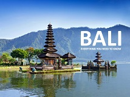

Posting Teratas
CANDI BOROBUDUR
Sejarah Singkat Candi Borobudur
Candi Borobudur merupakan candi Budha, terletak di desa Borobudur kabupaten Magelang, Jawa Tengah, dibangun oleh Raja Samaratungga, salah satu raja kerajaan Mataram Kuno, keturunan Wangsa Syailendra. Nama Borobudur merupakan gabungan dari kata Bara dan Budur...Baca selengkapnya >>>>>

Baca selengkapnya >>>>>
WISATA BALI
PANTAI KUTA BALI
Ketika Anda menyebutkan “Kuta Bali“, semua orang akan tahu dan tertuju pada sebuah pantai yang berada di Bali. Ya, Kuta adalah salah satu pantai yang bersih dan indah di pulau Bali. Terletak di Kecamatan Kuta, Badung Kuta Bali menjadi tujuan wisata terkenal...Baca selengkapnya >>>>>
GUNUNG BROMO
Gunung Bromo probolinggo jawa timur indonesia dengan ketinggian 2.329 mdpl,Gunung paling populer di kalangan wisatawan mancanegara maupun domestik GUNUNG BROMO atau GUNUNG BRAHMA adalah gunung suci dan salah satu gunung dari beberapa gunung lainnya yang bertempat dikawasan TENGGER gunung ini merupakan salah satu keindahan yang ditawarkan oleh TAMAN NASIONAL BROMO TENGGER SEMERU (TNBTS)...
Baca selengkapnya di bromotour.co.id>>>>>